Physics Homework 8 Resistivity and resistance · Worked solutions
All eight assigned questions. Each solution shows the setup, substitution and final answer. Use e = 1.602 × 10⁻¹⁹ C.
25.1 25.2 25.5 25.11 25.12 25.16 25.25 25.21 Print / Save PDF Question 1 25.1 · Charge in a lightning pulse Assume a constant 25,000 A current lasts 40 µs. Find transferred charge.
Original question 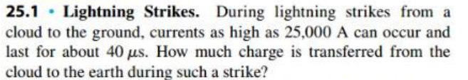
Convert the time Use seconds with amperes.
Δ t = 40 μ s = 40 × 10 − 6 s \begin{gathered}\Delta t=40\ \mu\mathrm s=40\times10^{-6}\ \mathrm s\end{gathered} Δ t = 40 μ s = 40 × 1 0 − 6 s Calculate charge Treat the current as constant during the strike.
Q = I Δ t = ( 25000 ) ( 40 × 10 − 6 ) = 1.0 C \begin{gathered}Q=I\Delta t=(25000)(40\times10^{-6})=1.0\ \mathrm C\end{gathered} Q = I Δ t = ( 25000 ) ( 40 × 1 0 − 6 ) = 1.0 C Final answer Q = 1.0 C \begin{gathered}Q=1.0\ \mathrm C\end{gathered} Q = 1.0 C Convert microseconds to seconds; this is the constant-current approximation.
Question 2 25.2 · Silver-wire drift speed Wire diameter 2.6 mm; 420 C passes in 80 min; electron density n = 5.8 × 10²⁸ m⁻³. Find current and electron drift-speed magnitude.
Original question 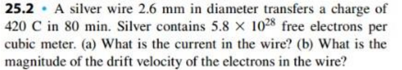
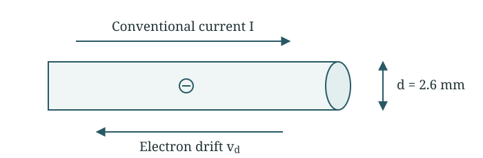
Conventional current and electron drift point in opposite directions. Part (a) Find current Convert minutes to seconds, then divide charge by time.
t = 80 ( 60 ) = 4800 s I = Q t = 420 4800 = 0.0875 A \begin{gathered}t=80(60)=4800\ \mathrm s\\I=\frac Qt=\frac{420}{4800}=0.0875\ \mathrm A\end{gathered} t = 80 ( 60 ) = 4800 s I = t Q = 4800 420 = 0.0875 A Part (b) Find area The radius is half the diameter.
d = 2.6 × 10 − 3 m A = π d 2 4 = π ( 2.6 × 10 − 3 ) 2 4 A = 5.3093 × 10 − 6 m 2 \begin{gathered}d=2.6\times10^{-3}\ \mathrm m\\A=\frac{\pi d^2}{4}=\frac{\pi(2.6\times10^{-3})^2}{4}\\A=5.3093\times10^{-6}\ \mathrm{m^2}\end{gathered} d = 2.6 × 1 0 − 3 m A = 4 π d 2 = 4 π ( 2.6 × 1 0 − 3 ) 2 A = 5.3093 × 1 0 − 6 m 2 Calculate drift speed Use the magnitude of the electron charge.
I = n e A v d ⇒ v d = I n e A v d = 0.0875 ( 5.8 × 10 28 ) ( 1.602 × 10 − 19 ) ( 5.3093 × 10 − 6 ) v d = 1.77 × 10 − 6 m / s \begin{gathered}I=neAv_d\quad\Rightarrow\quad v_d=\frac{I}{neA}\\v_d=\frac{0.0875}{(5.8\times10^{28})(1.602\times10^{-19})(5.3093\times10^{-6})}\\v_d=1.77\times10^{-6}\ \mathrm{m/s}\end{gathered} I = n e A v d ⇒ v d = n e A I v d = ( 5.8 × 1 0 28 ) ( 1.602 × 1 0 − 19 ) ( 5.3093 × 1 0 − 6 ) 0.0875 v d = 1.77 × 1 0 − 6 m/s Final answer I = 0.0875 A , v d = 1.77 × 10 − 6 m / s \begin{gathered}I=0.0875\ \mathrm A,\qquad v_d=1.77\times10^{-6}\ \mathrm{m/s}\end{gathered} I = 0.0875 A , v d = 1.77 × 1 0 − 6 m/s Electron drift is opposite conventional current and is very slow.
Question 3 25.5 · Transit time in two wire gauges Copper length 0.710 m; I = 4.85 A; n = 8.5 × 10²⁸ m⁻³. Diameters are 2.05 mm and 4.12 mm. Find electron transit time in each and explain diameter dependence.
Original question 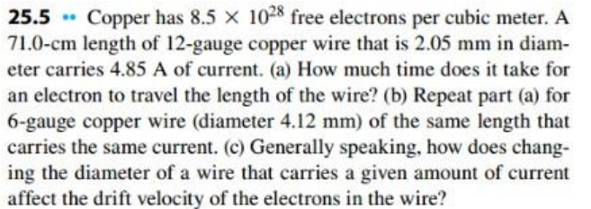
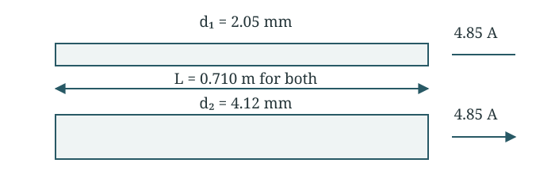
Both wires have the same length and current. More area means a lower drift speed. Set up the calculation Find the drift speed, then divide length by speed.
A = π d 2 4 , v d = I n e A , t = L v d \begin{gathered}A=\frac{\pi d^2}{4},\qquad v_d=\frac{I}{neA},\qquad t=\frac{L}{v_d}\end{gathered} A = 4 π d 2 , v d = n e A I , t = v d L Part (a) Use the 2.05 mm wire Convert the diameter to metres.
A 1 = π ( 2.05 × 10 − 3 ) 2 4 = 3.3006 × 10 − 6 m 2 v d 1 = 4.85 ( 8.5 × 10 28 ) ( 1.602 × 10 − 19 ) ( 3.3006 × 10 − 6 ) v d 1 = 1.0791 × 10 − 4 m / s t 1 = 0.710 1.0791 × 10 − 4 = 6.58 × 10 3 s = 1.83 h \begin{gathered}A_1=\frac{\pi(2.05\times10^{-3})^2}{4}=3.3006\times10^{-6}\ \mathrm{m^2}\\v_{d1}=\frac{4.85}{(8.5\times10^{28})(1.602\times10^{-19})(3.3006\times10^{-6})}\\v_{d1}=1.0791\times10^{-4}\ \mathrm{m/s}\\t_1=\frac{0.710}{1.0791\times10^{-4}}=6.58\times10^3\ \mathrm s=1.83\ \mathrm h\end{gathered} A 1 = 4 π ( 2.05 × 1 0 − 3 ) 2 = 3.3006 × 1 0 − 6 m 2 v d 1 = ( 8.5 × 1 0 28 ) ( 1.602 × 1 0 − 19 ) ( 3.3006 × 1 0 − 6 ) 4.85 v d 1 = 1.0791 × 1 0 − 4 m/s t 1 = 1.0791 × 1 0 − 4 0.710 = 6.58 × 1 0 3 s = 1.83 h Part (b) Use the 4.12 mm wire Keep the current, length and electron density the same.
A 2 = π ( 4.12 × 10 − 3 ) 2 4 = 1.3332 × 10 − 5 m 2 v d 2 = 4.85 ( 8.5 × 10 28 ) ( 1.602 × 10 − 19 ) ( 1.3332 × 10 − 5 ) v d 2 = 2.6716 × 10 − 5 m / s t 2 = 0.710 2.6716 × 10 − 5 = 2.66 × 10 4 s = 7.38 h \begin{gathered}A_2=\frac{\pi(4.12\times10^{-3})^2}{4}=1.3332\times10^{-5}\ \mathrm{m^2}\\v_{d2}=\frac{4.85}{(8.5\times10^{28})(1.602\times10^{-19})(1.3332\times10^{-5})}\\v_{d2}=2.6716\times10^{-5}\ \mathrm{m/s}\\t_2=\frac{0.710}{2.6716\times10^{-5}}=2.66\times10^4\ \mathrm s=7.38\ \mathrm h\end{gathered} A 2 = 4 π ( 4.12 × 1 0 − 3 ) 2 = 1.3332 × 1 0 − 5 m 2 v d 2 = ( 8.5 × 1 0 28 ) ( 1.602 × 1 0 − 19 ) ( 1.3332 × 1 0 − 5 ) 4.85 v d 2 = 2.6716 × 1 0 − 5 m/s t 2 = 2.6716 × 1 0 − 5 0.710 = 2.66 × 1 0 4 s = 7.38 h Part (c) Compare the diameters At fixed current, a thicker wire has a lower drift speed.
v d = 4 I n e π d 2 ⇒ v d ∝ 1 d 2 v d 2 v d 1 = ( 2.05 4.12 ) 2 = 0.2476 \begin{gathered}v_d=\frac{4I}{ne\pi d^2}\quad\Rightarrow\quad v_d\propto\frac1{d^2}\\\frac{v_{d2}}{v_{d1}}=\left(\frac{2.05}{4.12}\right)^2=0.2476\end{gathered} v d = n e π d 2 4 I ⇒ v d ∝ d 2 1 v d 1 v d 2 = ( 4.12 2.05 ) 2 = 0.2476 Final answer t 1 = 1.83 h , t 2 = 7.38 h Larger diameter gives lower drift speed. \begin{gathered}t_1=1.83\ \mathrm h,\qquad t_2=7.38\ \mathrm h\\\text{Larger diameter gives lower drift speed.}\end{gathered} t 1 = 1.83 h , t 2 = 7.38 h Larger diameter gives lower drift speed. v scales as 1/d² and transit time as d². This is electron drift, not how quickly a circuit responds.
Question 4 25.11 · Temperature coefficient from current Rod L = 1.50 m, diameter 0.00500 m, V = 15.0 V. Current is 18.5 A at 20.0°C and 17.2 A at 92.0°C; ignore expansion. Find ρ₂₀ and α₂₀.
Original question 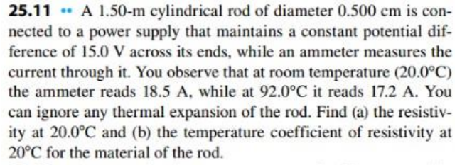
Part (a) Find area and resistance Convert the diameter from centimetres to metres.
d = 0.500 c m = 0.00500 m A = π ( 0.00500 ) 2 4 = 1.9635 × 10 − 5 m 2 R 20 = 15.0 18.5 = 0.81081 Ω \begin{gathered}d=0.500\ \mathrm{cm}=0.00500\ \mathrm m\\A=\frac{\pi(0.00500)^2}{4}=1.9635\times10^{-5}\ \mathrm{m^2}\\R_{20}=\frac{15.0}{18.5}=0.81081\ \Omega\end{gathered} d = 0.500 cm = 0.00500 m A = 4 π ( 0.00500 ) 2 = 1.9635 × 1 0 − 5 m 2 R 20 = 18.5 15.0 = 0.81081 Ω Calculate resistivity Rearrange R = ρL/A.
ρ 20 = R 20 A L = ( 0.81081 ) ( 1.9635 × 10 − 5 ) 1.50 = 1.061 × 10 − 5 Ω m \begin{gathered}\rho_{20}=\frac{R_{20}A}{L}\\=\frac{(0.81081)(1.9635\times10^{-5})}{1.50}\\=1.061\times10^{-5}\ \Omega\,\mathrm m\end{gathered} ρ 20 = L R 20 A = 1.50 ( 0.81081 ) ( 1.9635 × 1 0 − 5 ) = 1.061 × 1 0 − 5 Ω m Part (b) Find the new resistance The voltage stays the same.
R 92 = 15.0 17.2 = 0.87209 Ω R 92 = R 20 [ 1 + α ( 92.0 − 20.0 ) ] \begin{gathered}R_{92}=\frac{15.0}{17.2}=0.87209\ \Omega\\R_{92}=R_{20}[1+\alpha(92.0-20.0)]\end{gathered} R 92 = 17.2 15.0 = 0.87209 Ω R 92 = R 20 [ 1 + α ( 92.0 − 20.0 )] Solve for the temperature coefficient The dimensions stay constant, so resistance and resistivity have the same fractional change.
α = R 92 / R 20 − 1 92.0 − 20.0 = 18.5 / 17.2 − 1 72.0 = 1.05 × 10 − 3 K − 1 \begin{gathered}\alpha=\frac{R_{92}/R_{20}-1}{92.0-20.0}\\=\frac{18.5/17.2-1}{72.0}=1.05\times10^{-3}\ \mathrm{K^{-1}}\end{gathered} α = 92.0 − 20.0 R 92 / R 20 − 1 = 72.0 18.5/17.2 − 1 = 1.05 × 1 0 − 3 K − 1 Final answer ρ 20 = 1.06 × 10 − 5 Ω m α = 1.05 × 10 − 3 K − 1 \begin{gathered}\rho_{20}=1.06\times10^{-5}\ \Omega\,\mathrm m\\\alpha=1.05\times10^{-3}\ \mathrm{K^{-1}}\end{gathered} ρ 20 = 1.06 × 1 0 − 5 Ω m α = 1.05 × 1 0 − 3 K − 1 Temperature differences in kelvins and Celsius have the same numerical value.
Question 5 25.12 · Current density in square copper wire Square side 2.3 mm; length 4.0 m; I = 3.6 A; n = 8.5 × 10²⁸ m⁻³; copper ρ = 1.72 × 10⁻⁸ Ω m. Find current density, electric field, and electron transit time.
Original question 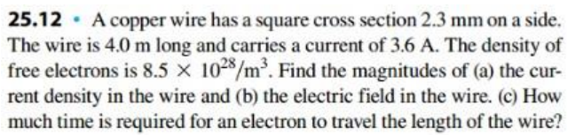
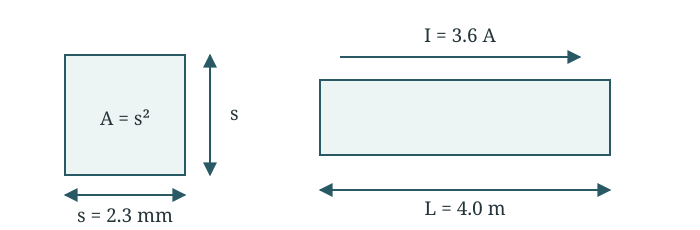
Use the square cross-sectional area, A = s². Part (a) Find area and current density Use the square area.
A = s 2 = ( 2.3 × 10 − 3 ) 2 = 5.29 × 10 − 6 m 2 J = I A = 3.6 5.29 × 10 − 6 = 6.81 × 10 5 A / m 2 \begin{gathered}A=s^2=(2.3\times10^{-3})^2=5.29\times10^{-6}\ \mathrm{m^2}\\J=\frac IA=\frac{3.6}{5.29\times10^{-6}}=6.81\times10^5\ \mathrm{A/m^2}\end{gathered} A = s 2 = ( 2.3 × 1 0 − 3 ) 2 = 5.29 × 1 0 − 6 m 2 J = A I = 5.29 × 1 0 − 6 3.6 = 6.81 × 1 0 5 A/ m 2 Part (b) Find the electric field Use the microscopic form of Ohm’s law.
E = ρ J = ( 1.72 × 10 − 8 ) ( 6.8053 × 10 5 ) E = 1.17 × 10 − 2 V / m \begin{gathered}E=\rho J=(1.72\times10^{-8})(6.8053\times10^5)\\E=1.17\times10^{-2}\ \mathrm{V/m}\end{gathered} E = ρ J = ( 1.72 × 1 0 − 8 ) ( 6.8053 × 1 0 5 ) E = 1.17 × 1 0 − 2 V/m Part (c) Find the travel time Find drift speed, then divide length by speed.
v d = J n e = 6.8053 × 10 5 ( 8.5 × 10 28 ) ( 1.602 × 10 − 19 ) v d = 4.998 × 10 − 5 m / s t = L v d = 4.0 4.998 × 10 − 5 t = 8.00 × 10 4 s = 22.2 h \begin{gathered}v_d=\frac{J}{ne}=\frac{6.8053\times10^5}{(8.5\times10^{28})(1.602\times10^{-19})}\\v_d=4.998\times10^{-5}\ \mathrm{m/s}\\t=\frac{L}{v_d}=\frac{4.0}{4.998\times10^{-5}}\\t=8.00\times10^4\ \mathrm s=22.2\ \mathrm h\end{gathered} v d = n e J = ( 8.5 × 1 0 28 ) ( 1.602 × 1 0 − 19 ) 6.8053 × 1 0 5 v d = 4.998 × 1 0 − 5 m/s t = v d L = 4.998 × 1 0 − 5 4.0 t = 8.00 × 1 0 4 s = 22.2 h Final answer J = 6.81 × 10 5 A / m 2 E = 1.17 × 10 − 2 V / m t = 8.00 × 10 4 s ( 22.2 h ) \begin{gathered}J=6.81\times10^5\ \mathrm{A/m^2}\\E=1.17\times10^{-2}\ \mathrm{V/m}\\t=8.00\times10^4\ \mathrm s\;(22.2\ \mathrm h)\end{gathered} J = 6.81 × 1 0 5 A/ m 2 E = 1.17 × 1 0 − 2 V/m t = 8.00 × 1 0 4 s ( 22.2 h ) A small internal electric field maintains a substantial current because copper has low resistivity.
Question 6 25.16 · Stretching a wire Wire resistance is R. Stretch it to 3L without changing density or resistivity. Find its new resistance.
Original question 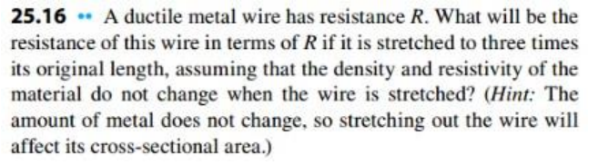
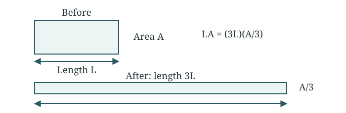
The volume stays constant as the wire becomes longer and thinner. Keep the volume constant The same mass and density mean the same volume.
L A = L ′ A ′ , L ′ = 3 L L A = 3 L A ′ ⇒ A ′ = A 3 \begin{gathered}LA=L'A',\qquad L'=3L\\LA=3LA'\quad\Rightarrow\quad A'=\frac A3\end{gathered} L A = L ′ A ′ , L ′ = 3 L L A = 3 L A ′ ⇒ A ′ = 3 A Substitute the new dimensions The wire is three times longer and has one-third the area.
R ′ = ρ L ′ A ′ = ρ 3 L A / 3 R ′ = 9 ρ L A = 9 R \begin{gathered}R'=\rho\frac{L'}{A'}=\rho\frac{3L}{A/3}\\R'=9\rho\frac LA=9R\end{gathered} R ′ = ρ A ′ L ′ = ρ A /3 3 L R ′ = 9 ρ A L = 9 R Final answer R ′ = 9 R \begin{gathered}R'=9R\end{gathered} R ′ = 9 R Both the longer path and smaller cross-section raise resistance, each by a factor of three.
Question 7 25.25 · Transmission-line loss Copper cable L = 100 km, diameter 0.100 m, I = 125 A; ρ = 1.72 × 10⁻⁸ Ω m. Find voltage drop and thermal energy per hour.
Original question 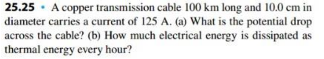
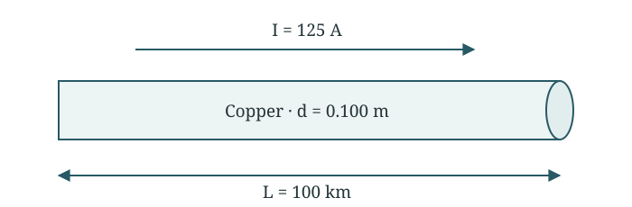
Use the stated length of one cable. Find cable resistance Convert length and diameter to metres.
L = 1.00 × 10 5 m , d = 0.100 m A = π ( 0.100 ) 2 4 = 7.8540 × 10 − 3 m 2 R = ρ L A = ( 1.72 × 10 − 8 ) ( 1.00 × 10 5 ) 7.8540 × 10 − 3 R = 0.2190 Ω \begin{gathered}L=1.00\times10^5\ \mathrm m,\qquad d=0.100\ \mathrm m\\A=\frac{\pi(0.100)^2}{4}=7.8540\times10^{-3}\ \mathrm{m^2}\\R=\rho\frac LA=\frac{(1.72\times10^{-8})(1.00\times10^5)}{7.8540\times10^{-3}}\\R=0.2190\ \Omega\end{gathered} L = 1.00 × 1 0 5 m , d = 0.100 m A = 4 π ( 0.100 ) 2 = 7.8540 × 1 0 − 3 m 2 R = ρ A L = 7.8540 × 1 0 − 3 ( 1.72 × 1 0 − 8 ) ( 1.00 × 1 0 5 ) R = 0.2190 Ω Part (a) Calculate voltage drop Use Ohm’s law for this cable.
Δ V = I R = ( 125 ) ( 0.2190 ) = 27.4 V \begin{gathered}\Delta V=IR=(125)(0.2190)=27.4\ \mathrm V\end{gathered} Δ V = I R = ( 125 ) ( 0.2190 ) = 27.4 V Part (b) Find energy in one hour First find heating power, then multiply by 3600 s.
P = I 2 R = ( 125 ) 2 ( 0.2190 ) = 3422 W E h e a t = P Δ t = ( 3422 ) ( 3600 ) E h e a t = 1.23 × 10 7 J = 3.42 k W h \begin{gathered}P=I^2R=(125)^2(0.2190)=3422\ \mathrm W\\E_{\mathrm{heat}}=P\Delta t=(3422)(3600)\\E_{\mathrm{heat}}=1.23\times10^7\ \mathrm J=3.42\ \mathrm{kWh}\end{gathered} P = I 2 R = ( 125 ) 2 ( 0.2190 ) = 3422 W E heat = P Δ t = ( 3422 ) ( 3600 ) E heat = 1.23 × 1 0 7 J = 3.42 kWh Final answer Δ V = 27.4 V E h e a t = 1.23 × 10 7 J each hour \begin{gathered}\Delta V=27.4\ \mathrm V\\E_{\mathrm{heat}}=1.23\times10^7\ \mathrm J\text{ each hour}\end{gathered} Δ V = 27.4 V E heat = 1.23 × 1 0 7 J each hour This is the loss in the specified one cable; do not silently double its length.
Question 8 25.21 · Gold wire under an electric field Gold diameter 0.84 mm; E = 0.49 V/m; segment length 6.4 m; ρ = 2.44 × 10⁻⁸ Ω m. Find current, voltage difference magnitude and segment resistance.
Original question 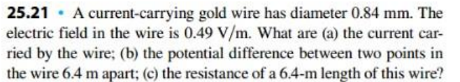
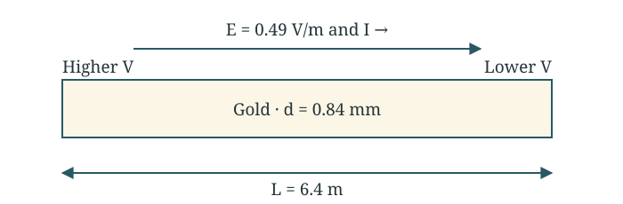
The electric field and current point toward lower potential. Part (a) Find area and current density Use the resistivity of gold from the supplied table.
A = π ( 0.84 × 10 − 3 ) 2 4 = 5.5418 × 10 − 7 m 2 J = E ρ = 0.49 2.44 × 10 − 8 = 2.0082 × 10 7 A / m 2 \begin{gathered}A=\frac{\pi(0.84\times10^{-3})^2}{4}=5.5418\times10^{-7}\ \mathrm{m^2}\\J=\frac E\rho=\frac{0.49}{2.44\times10^{-8}}=2.0082\times10^7\ \mathrm{A/m^2}\end{gathered} A = 4 π ( 0.84 × 1 0 − 3 ) 2 = 5.5418 × 1 0 − 7 m 2 J = ρ E = 2.44 × 1 0 − 8 0.49 = 2.0082 × 1 0 7 A/ m 2 Calculate current Multiply current density by area.
I = J A = ( 2.0082 × 10 7 ) ( 5.5418 × 10 − 7 ) I = 11.1 A \begin{gathered}I=JA=(2.0082\times10^7)(5.5418\times10^{-7})\\I=11.1\ \mathrm A\end{gathered} I = J A = ( 2.0082 × 1 0 7 ) ( 5.5418 × 1 0 − 7 ) I = 11.1 A Part (b) Calculate potential difference The electric field is uniform along the segment.
∣ Δ V ∣ = E L = ( 0.49 ) ( 6.4 ) = 3.14 V \begin{gathered}|\Delta V|=EL=(0.49)(6.4)=3.14\ \mathrm V\end{gathered} ∣Δ V ∣ = E L = ( 0.49 ) ( 6.4 ) = 3.14 V Part (c) Calculate resistance Use the same length and cross-sectional area.
R = ρ L A = ( 2.44 × 10 − 8 ) ( 6.4 ) 5.5418 × 10 − 7 R = 0.282 Ω \begin{gathered}R=\rho\frac LA=\frac{(2.44\times10^{-8})(6.4)}{5.5418\times10^{-7}}\\R=0.282\ \Omega\end{gathered} R = ρ A L = 5.5418 × 1 0 − 7 ( 2.44 × 1 0 − 8 ) ( 6.4 ) R = 0.282 Ω Final answer I = 11.1 A , ∣ Δ V ∣ = 3.14 V R = 0.282 Ω \begin{gathered}I=11.1\ \mathrm A,\qquad |\Delta V|=3.14\ \mathrm V\\R=0.282\ \Omega\end{gathered} I = 11.1 A , ∣Δ V ∣ = 3.14 V R = 0.282 Ω Check IR = 3.14 V. Potential decreases along the field.